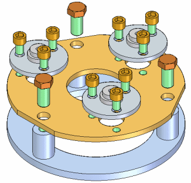

Pattern, mirror, and copy components in assemblies
When building assemblies, you often need to place parts and subassemblies multiple times in a pattern or mirror arrangement. For example, nuts, bolts, and other fasteners are placed in a rectangular or circular pattern on the parts they are fastening together. Use patterning, mirroring, and copying and pasting to avoid placing the same components many times individually.
Patterning parts
Use the Pattern Parts command to quickly copy one or more parts and subassemblies into a pattern arrangement. You can also add an existing part pattern to a new part pattern.
The patterned parts are not positioned using assembly relationships, but according to a pattern feature on a part, a part or assembly sketch containing a patterning element.

Mirroring parts
You can use the Mirror Components command to quickly copy one or more assembly component into a mirror arrangement around a reference plane you select.

Duplicating assembly components
You can use the Duplicate Components command to quickly copy one or more assembly component relative to existing assembly components.


Pattern assembly components along a curve
You can use the Pattern along curve command to use 3D curve geometry to position assembly components along the curve. The curve geometry can reside in sketches, part edges, part edges in subassemblies, 3D curves or construction geometry.
Copying and pasting components in assemblies
You can copy components that have already been placed in an assembly, and then paste them within the same assembly or within another assembly. When you copy multiple components, any relationships that were defined in the original assembly are remembered, and the Assemble Multiple Components dialog box assists you in redefining them in the target assembly.
How do I
Build a pattern of parts in an assemblyDrop an assembly pattern
Mirror components in an assembly
Copy and paste assembly components
Look up more details
Pattern Parts commandPattern Parts command bar
Duplicate Component command
Pattern Parts command bar
Drop Pattern command
Remove Override Body command
Mirror Components command
Mirror Components command bar (Assembly)
Mirror component options (Assembly)
Pattern Along Curve (assembly)
Related Topics
Along Curve pattern parts command (assembly)Along Curve pattern features command (assembly)